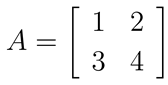
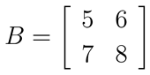
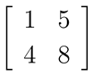
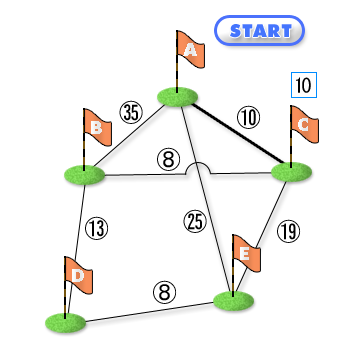
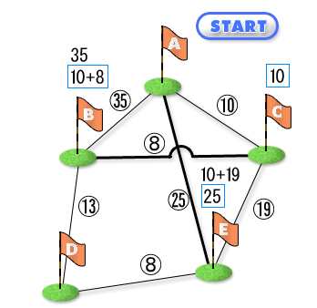
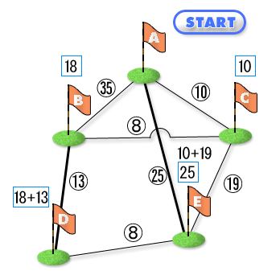
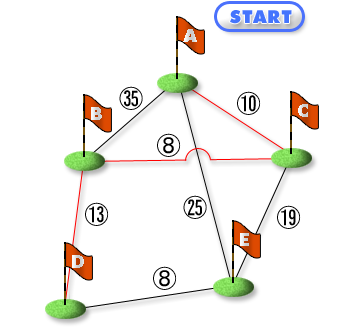

文字列の操作はプログラム中でしばしば必要になりますが、配列を扱うプログラムをいちいち書いていては面倒です。そこで、C言語には文字列を操作するための便利な関数があらかじめ用意されています。
関数名 操作内容 strcpy(x, y) 文字列 y の内容を、文字列 x にコピーする strcat(x, y) 文字列 x の内容に文字列 y の内容を追加したものを、文字列 x に保存する strlen(x) 文字列 x の長さ（先頭からヌル文字までの文字数）を計算する strncpy(x, y, n) 文字列 y の先頭 n 文字分を、文字列 x に保存する strncat(x, y, n) 文字列 x の内容に文字列 y の先頭 n 文字分を追加したものを、文字列 x に保存する 第 3 章で紹介した数値計算のためのライブラリ関数を使うときには、プログラムの冒頭に次のように書く必要がありました。
#include <math.h>一方、本章で紹介した文字列操作の関数を使うときは、冒頭に以下のように書く必要があります。#include <string.h>例として、「Hello」「, 」「World」「.」というの4つの文字列を結合して、「Hello, World.」と表示するプログラムを以下に示します。#include <stdio.h>
#include <string.h>
int main() {
/* 文字列操作のために十分な長さをとる */
char message[256];
/* 先頭をヌル文字にして長さ0の文字列にする */
message[0] = '\0';
printf("message[] = %s\n", message);
printf("message len = %d\n", strlen(message));
/* Helloをコピーする */
strcpy(message, "Hello");
printf("message[] = %s\n", message);
printf("message len = %d\n", strlen(message));
/* , を追加する */
strcat(message, ", ");
printf("message[] = %s\n", message);
printf("message len = %d\n", strlen(message));
/* Worldを追加する */
strcat(message, "World");
printf("message[] = %s\n", message);
printf("message len = %d\n", strlen(message));
/* .を追加する */
strcat(message, ".");
printf("message[] = %s\n", message);
printf("message len = %d\n", strlen(message));
return 0;
}実行結果は次のようになります。message[] =
message len = 0
message[] = Hello
message len = 5
message[] = Hello,
message len = 7
message[] = Hello, World
message len = 12
message[] = Hello, World.
message len = 13このプログラムの計算結果である「Hello, World.」という文字列は配列 message に保存されます。この配列の大きさ（要素数）は 256 というかなり大きな数です。これは文字列操作の過程で、値が代入される配列の要素のインデックスが、最初に宣言した要素数を超えないようにする配慮です。超えてしまうと、計算結果が誤ったものになる可能性がでます。本章で紹介した文字列操作関数は、計算結果を保存する配列が十分大きいか確認しません。このため今回は、扱う文字列にたいして十分な大きさの配列を用意することで、この問題に対処しています。あまり良い方法でありませんが、簡単なプログラムでは許されるでしょう。
配列についてもう少し考えてみましょう。int a[5] という配列は 5 個の要素を持つ配列でした。これを拡張して、たとえば 2 × 5 の要素を持つ配列を利用することもできます。2 × 5 の配列を宣言するには、以下のようにカギ括弧 [ ] で括られた要素数もう 1 つを後ろに追加するだけです。このような配列を 2 次元配列といいます。一般に 1 次元より大きな配列を多次元配列と呼びます。int a[5]; /* 1 x 5 の配列 */
int b[2][5]; /* 2 x 5 の配列 */1 次元の配列 a は、1 x 5 の 2 次元配列と見なすこともできます。2 × 5 の配列 b の各要素の値は、1 次元配列と同じく [ ] の間にインデックスを書くことで参照したり代入したりすることができます。1 次元配列と同じくインデックスの値は 0 から (要素数 - 1) の間の値ですので、注意してください。b[0][0] = 1;
b[0][1] = 2;
b[0][2] = 3;
b[0][3] = 4;
b[0][4] = 5;
b[1][0] = 6;
b[1][1] = 7;
b[1][2] = 8;
b[1][3] = 9;
b[1][4] = 10;配列 b のインデックスは 1 つ目が 0 から 1、2 つ目が 0 から 4 の間です。配列の次元数はいくつでも増やせるので 3 次元配列や 4 次元配列も宣言できます。しかし実際によく使われるのは 3 次元配列ぐらいまででしょうか。演習 7−1
3 × 3 の 2 次元配列を宣言し、その配列が魔方陣となるように数値を配置して結果を表示するプログラムを作成してください。また、その実行結果も示してください。魔方陣とは正方形の方陣に数字を配置し、縦・横・斜めのいずれの列についても、その列の数字の合計が同じになるもののことです。特に 1 から方陣のマスの総数（3 × 3 の場合は 9）までの数字を 1 つずつ過不足なく使ったものを呼びます。詳しくは、こちらを参照してください。なお、要素数が奇数の魔方陣は以下の規則で作成できることが知られています。
- 1 行目 2 列目 (中央) を 1 とする
- 右上に次の数字を置いていく(最上段の上は最下段になる)
- 右上が埋まっていたら一つ下に次の数字を置く
- 再び右上へと数字を埋めていく
- 2〜4 を縦の要素数分繰り返す
ヒントとしてプログラムの一部を以下に示しますので、__(1)__ 〜 __(3)__ の部分を埋めることでプログラムを完成させてください。#include <stdio.h>
int main() {
int a[3][3];
int val = 1;
int i, j;
for (i = 0; i < 3; i = i + 1) {
for (j = 0; j < 3; j = j + 1) {
a[__(1)__][__(2)__] = val;
val = val + 1;
}
}
for (i = 0; i < 3; i = i + 1) {
for (j = 0; j < 3; j = j + 1) {
printf("%d ", __(3)__);
}
printf("\n");
}
return 0;
}
2 x 2 の行列
多次元配列のもうひとつの応用例として、2 × 2の行列の四則演算をしてみましょう。2 × 2の行列は 2 次元の配列を使って表現することができます。たとえば、下の２つの行列 A、B:
行列Ａ
行列Ｂ
は、それぞれ次のようなプログラムで表現することができます。
int a[2][2];
a[0][0] = 1;
a[0][1] = 2;
a[1][0] = 3;
a[1][1] = 4;
int b[2][2];
b[0][0] = 5;
b[0][1] = 6;
b[1][0] = 7;
b[1][1] = 8;しかし、このような書き方では変数名が長い場合や要素の数が多い場合、プログラムが冗長になってしまいます。そこでC言語ではこのような配列の初期化を簡潔に書けるようにするため、以下のような方法も用意されています。ただし、この書き方ではカンマを書き忘れたり、要素の場所を間違ってしまわないように注意が必要です。int a[][] = {{1, 2},
{3, 4}};
int b[][] = {{5, 6},
{7, 8}};実は、このような配列の初期化は、1 次元の配列でも利用できます。int c[] = {0, 1, 4, 9, 16, 25, 36};配列を引数にとる関数
本章の冒頭では、文字列を操作する関数を紹介しました。一方、前章で説明したとおり文字列は文字（文字コード）の配列として表現されています。したがって、このような文字列を操作する関数は引数として配列を受け取る関数ということになります。今までの関数の引数は int 型のような数値だけでした。しかし、このように引数として配列を受け取ることもできます。配列を引数として受け取る関数を作成することで、配列に対する処理を関数にすることができます。たとえば、int 型の配列の全要素を表示するプログラムを今まで何度も紹介してきました。これを以下のような関数にすることで、プログラムを簡潔にすることができます。#include <stdio.h>
/* int型の配列の全要素を表示する関数 */
void print_int_array(int array[], int n) {
for (int i = 0; i < n; i = i + 1) {
printf("%d ", array[i]);
}
printf("\n");
}
int main() {
int a[] = {1, 2, 3, 4, 5, 6, 7, 8, 9, 10};
print_int_array(a, 10);
int b[] = {-1, 1, -1, 1, -1, 1, -1, 1, -1, 1};
print_int_array(b, 10);
for (int i = 0; i < 10; i = i + 1) {
a[i] = a[i] * b[i];
}
print_int_array(a, 10);
return 0;
}print_int_array 関数の第 1 引数 array は配列です。配列が引数の場合、int array[]のように書きます。[ ] 内に配列の要素数は書きません。逆に言うと、要素数がいくつの配列であっても引数として print_int_array 関数に渡せます。要素数は第 2 引数 n として print_int_array 関数に渡します。上のプログラムの実行結果は次のようになります。1 2 3 4 5 6 7 8 9 10
-1 1 -1 1 -1 1 -1 1 -1 1
-1 2 -3 4 -5 6 -7 8 -9 10配列を関数の引数として渡せば、関数の中でその配列の各要素の値を変更することもできます。たとえば、配列のすべての要素を 0 に初期化する関数は以下のように書くことができます。#include <stdio.h>
/* int型の配列の全要素を表示する関数 */
void print_int_array(int array[], int n) {
for (int i = 0; i < n; i = i + 1) {
printf("%d ", array[i]);
}
printf("\n");
}
/* 配列の全要素を0にする関数 */
void zero_array(int array[], int n) {
for (int i = 0; i < n; i = i + 1) {
array[i] = 0;
}
}
int main() {
int a[] = {1, 2, 3, 4, 5, 6, 7, 8, 9, 10};
print_int_array(a, 10);
zero_array(a, 10);
print_int_array(a, 10);
return 0;
}実行結果は次のようになります。1 2 3 4 5 6 7 8 9 10
0 0 0 0 0 0 0 0 0 0多次元配列を関数の引数にする場合は、配列の宣言時と同じく引数の名前の後ろに [ ] を続けます。たとえば 3 次元配列を引数としてとる関数は以下のように書きます。/* int型の3次元配列の全要素を0にする関数 */
void print_int_array3D(int array[3][3][3]) {
for (int i = 0; i < 3; i = i + 1) {
for (int j = 0; j < 3; j = j + 1) {
for (int k = 0; k < 3; k = k + 1) {
....
}
}
}
}配列は関数の戻り値にできない？
これまで関数で計算した結果は関数の戻り値にしていました。たとえば足し算をおこなう関数を作成したとすると次のようになります。int add(int x, int y) {
return x + y;
}しかし冒頭で紹介した文字列操作関数、たとえば strcat(x, y) は、計算結果を戻り値として返さず、引数で渡された配列に代入することで返します。引数で渡した配列の内容が変更されるのです。実は配列を関数の戻り値とすることはできません。正確にはできないわけではありませんが、特別な配慮が必要です。例えば次のような関数は、配列を戻り値にしていますが、コンパイルするとエラーになります。/* [注意!] この関数はコンパイルできません */
float[] sqrtArray() {
float array[100];
for (int index = 0; index < 100; index = index + 1) {
array[index] = sqrt(index);
}
return array;
}以上の内容をまとめると以下のとおりです。
- 配列を関数の戻り値にすることは（簡単には）できない
- 関数で配列を操作したい場合、配列を引数で渡し、配列の要素を直接変更する
演習 7−2
2 次元配列を 1 つ引数にとり、その配列の全要素を表示する関数 printMatrix を作成してください。さらに、作成した関数を使って以下の 2 × 2 の行列を表示してください。
2 x 2 行列
printMatrix() 関数の宣言部は以下のようになります/* 2次元配列の全要素を表示する関数 */
void printMatrix(int array[2][2]) {
....
}2 次元の行列演算
上の演習で作成した printMatrix 関数を使うと、2 次元行列を簡単に表示できるようになりました。 これを利用して、いよいよ実際に行列演算を行います。まずはもっとも簡単な行列の加算をおこなう関数を作成します。行列の加算は、各要素をそれぞれ足すだけでよいため、以下のような関数で実現できます。
/* arrayA に arrayB の全要素を加算する関数 */
void addMatrix(int arrayA[2][2], int arrayB[2][2]) {
arrayA[0][0] = arrayA[0][0] + arrayB[0][0];
arrayA[0][1] = arrayA[0][1] + arrayB[0][1];
arrayA[1][0] = arrayA[1][0] + arrayB[1][0];
arrayA[1][1] = arrayA[1][1] + arrayB[1][1];
}実際に addMatrix 関数を呼び出して動作を確認してみます。#include <stdio.h>
/* arrayAにarrayBの全要素を加算する関数 */
void addMatrix(int arrayA[2][2], int arrayB[2][2]) {
arrayA[0][0] = arrayA[0][0] + arrayB[0][0];
arrayA[0][1] = arrayA[0][1] + arrayB[0][1];
arrayA[1][0] = arrayA[1][0] + arrayB[1][0];
arrayA[1][1] = arrayA[1][1] + arrayB[1][1];
}
/* 2次元配列の全要素を表示する関数 */
void printMatrix(int array[2][2]) {
....
}
int main() {
int matrixA[2][2] = {{1, 2},
{3, 4}};
int matrixB[2][2] = {{5, 6},
{7, 8}};
printMatrix(matrixA);
printf(" + \n");
printMatrix(matrixB);
printf(" = \n");
addMatrix(matrixA, matrixB);
printMatrix(matrixA);
return 0;
}実行結果は以下のようになります。1 2
3 4
+
5 6
7 8
=
6 8
10 12演習 7−3
上で示した addMatrix 関数を for 文を使って書き直してください。こうすることで将来 2 × 2 行列以外の行列を計算する必要がでてきた場合に、簡単な変更ですむようになります。演習 7−4
演習 7−3 で書き直した addMatrix() 関数を参考にして、以下の関数を作成してください。
- 行列の減算をする関数 subMatrix(int matrixA[2][2], int matrixB[2][2])
- 行列の乗算をする関数 mulMatrix(int matrixA[2][2], int matrixB[2][2])
作成した関数を使い、（先に示したプログラムの）行列 matrixA と matrixB:
int matrixA[2][2] = {{1, 2}, {3, 4}};
int matrixB[2][2] = {{5, 6}, {7, 8}};について減算、乗算した結果を表示してください。表示した結果は以下のようになります。
1 2
3 4
-
5 6
7 8
=
-4 -4
-4 -4
1 2
3 4
*
5 6
7 8
=
19 22
43 50
最後に配列の応用として最短経路問題とその解法を説明します。最短経路問題とは？
最短経路問題には何個かのバリエーションがありますが、今ここでは単一始点最短経路問題といわれる、任意の目的地 A から他のすべての目的地に到達する最短の経路を求める問題を取り上げます。この問題では、目的地 n 箇所とそれぞれの目的地の間の距離は予め与えられているものとします。ネット上にさまざまなサービスが展開されている鉄道の乗り換え案内や、カーナビ内のソフトウェアといった形で、日常生活でも頻繁に発生する問題です。ダイクストラ法とは？
この最短経路問題の解法としては、以下に説明するダイクストラ法が良く知られています。これは最短経路が未確定の目的地のうち、暫定距離が最小の地点は、暫定距離を最小にする経路が出発点からの最短経路になるという性質を利用します。暫定の距離とは「出発点〜最短経路が決定した目的地のいずれか〜対象の目的地」までの経路のうち、最短のものです。例えば今、A、B、C、D、E の 5 地点があり、出発点 A から各地点への最短経路を求めるとします。
まず出発点 A に隣接する地点のうち、A から最短の地点を探すと、これは C です。これから C までの最短経路は A-C と決まり、距離は 10 となります。図ではノードが地点で、エッジのそばの数字が地点間の距離です。
C への最短経路が確定
次に最短経路が確定した地点 A（最短経路の距離は当然 0 です）と C から各地点への暫定距離を計算します。A または C から（他の地点を経由しないで）直接到達できない地点の暫定距離は無限大とします。すると無限大でないのは B と E です。B への経路は A-B または A-C-B ですが、距離が短いのは A-C-B の 18 の方なので、これを B の暫定距離とします。同様に E の暫定距離は A-E の 25 です。暫定距離を計算したら、暫定距離が最小の地点を選びます。この地点の最短経路は、暫定距離を最小にする経路です。したがって地点 B が選ばれ、A から B への最短経路は A-C-B が決まります。B への最短経路が確定
最短経路が確定した地点は A、B、C となりました。再び最短経路がまだ確定していない地点への暫定距離を計算します。確定した地点に B が加わったので、D の暫定距離が無限大から 31 に変わります。31 となる経路は A-B-D です。前回同様、暫定距離が最小のものを選びます。今回は E ですので、E の最短経路は A-E でその距離は 25 となります。E への最短経路が確定
再び、最短経路がまだ確定していない地点への暫定距離を計算しますが、残ったのは D だけです。最短経路が確定した A、B、C、E から D へ到達する経路は A-B-D と A-E-D の 2 種類ですが、最小のものは A-B-D の 31 の方なので、暫定距離は前回と変わりません。次に暫定距離のうち最小のものを選びますが、今回は 1 つしかないので、D が選ばれ、最短経路が A-B-D と確定します。これで全ての地点について最短経路が決まりました。
D への最短経路が確定
ダイクストラ法をプログラムで実現するには、例えば以下のような配列を用意すればよいでしょう。各地点に 0 から始まる通し番号をふり、それを配列のインデックスに使います。例えば 2 番目と 4 番目の地点の間の距離は配列 weight[2][4] に記録します。また 3 番目の地点の暫定距離は配列 distance[3] に記録します。最短経路が確定している地点の場合は、配列 distance の要素の値は暫定距離ではなく最短経路の距離となります。
- 各地点間の距離を記録した 2 次元配列
- 各地点の最短経路が確定したかどうかを記録する 1 次元配列（0 なら未確定、1 なら確定）
- 各地点への暫定距離（または最短経路が確定していればその距離）を記録する 1 次元配列
- 各地点への最短経路で、その地点の一つ前の地点を記録した 1 次元配列
演習 7−5
ダイクストラ法を使って最短経路問題を解くプログラムを作成してください。地点の数や地点間の距離は上の説明と同じものを使ってください。地点 A が出発点です。各地点は次のように番号をふることとします。
- A ⇒ 0
- B ⇒ 1
- C ⇒ 2
- D ⇒ 3
- E ⇒ 4
プログラムの出力結果は以下のようになるようにしてください。右から順に「目的名」「最短距離」「最短距離での経路」となります。
1: 18(1 => 2 => 0)
2: 10(2 => 0)
3: 31(3 => 1 => 2 => 0)
4: 25(4 => 0)
本章では前章で説明した配列と文字列について応用部分を説明しました。具体的には以下のとおりです。
- 文字列を操作する関数の使い方
- 行列を表現するために利用する多次元配列
- 配列を引数にとる関数の定義方法
Copyright 2009-2011 the Compview project,
Tokyo Institute of Technology. All rights reserved.
{kind=link}
{kind=link}
{kind=link}
{kind=link}
{kind=link}
{kind=link}
{kind=link}